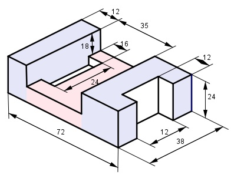
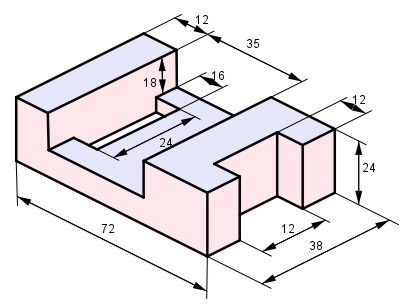

Aufgabe 62 Berechnen Sie das Volumen V und die Oberfläche O des dargestellten symmetrischen Körpers. Alle Maße in mm.

Das Volumen besteht aus dem linken blauen Rechteckprisma, dem roten Rechteckprisma minus weißem Rechteckprisma und dem rechten blauen Rechteckprisma minus weißem Rechteckprisma. V linkes Rechteckprisma: 12 mm * 24 mm * 38 mm = 10 944 mm3 V rotes Rechteckprisma – Ausschnitt: 35*(24 – 18) * 38 mm3 – 24 * (24 – 18) * 16 mm3 = = 7 980 mm3 – 2 304 mm3 = 5 676 mm3 V blaues Rechteckprisma – Ausschnitt: 38 * 24 * (72 – 12 – 35) mm3 – 12 * 12 * 24 mm3 = = 22 800 mm3 - 3 456 mm3 = 19 344 mm3 V = 10 944 mm3 + 5 676 mm3 + 19 344 mm3 = 35 964 mm3
O = 2 * blaue Flächen + rote Flächen mit der Höhe 24 mm + rote Flächen mit der Höhe (24 mm – 18 mm) = 6 mm + rote Flächen mit der Höhe 18 mm 2 * blaue Flächen: 2 * [12 * 38 + (35 * 38 – 16 * 24) mm2 + + 38 * (72 – 12 – 35 ) mm2 – - 12 * 12 mm2] = = 2 * [456 mm2 + 1 330 mm2 - 384 mm2 + 950 mm2 - 144 mm2] = = 2 * 2 208 mm2 = 4 416 mm2 Rote Flächen mit der Höhe 24 mm: 24 * [2 * 12 + 2 * (72 – 12 – 35) + 2 * 38 + + 2 * 12 + 24 ] mm2 = = 24 * (24 + 50 + 76 + 24 + 24) mm2 = = 24 * 198 mm2 = 4 752 mm2 Rote Flächen mit der Höhe 6 mm: 6 * [2 * 35 + (24 + 2 * 16 )] mm2 = = 6 * (70 + 56) mm2 = 6 * 126 mm2 = 756 mm2 Rote Flächen mit der Höhe 18 mm: 18 * [(38 – 24) + 38] mm2 = = 18 * (14 + 38) mm2 = 18 * 52 mm2 = = 936 mm2 O = 4 416 mm2 + 4 752 mm2 + 756 mm2 + 936 mm2 = = 10 860 mm2 O = 108,6 cm2